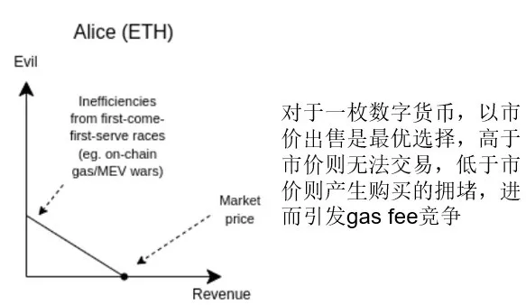
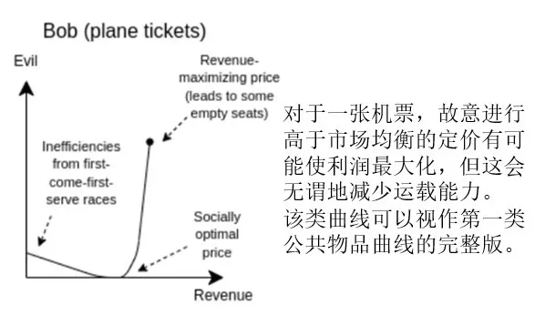
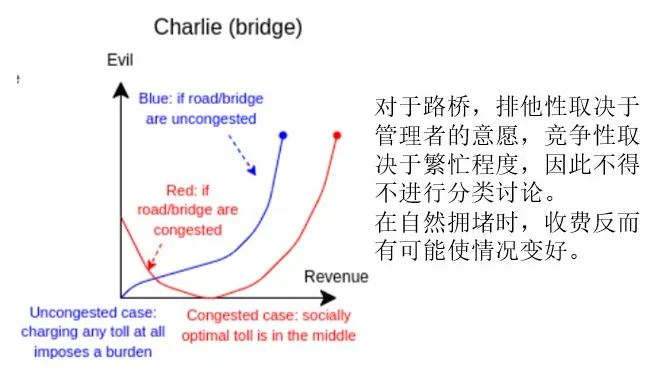
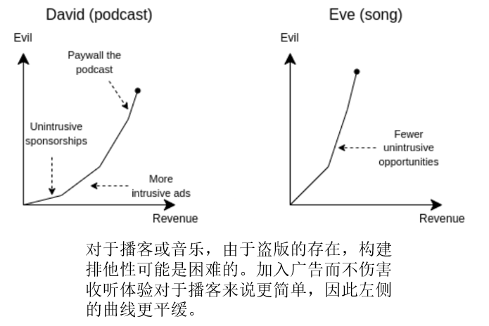
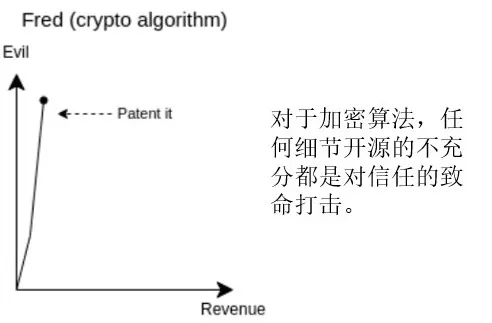
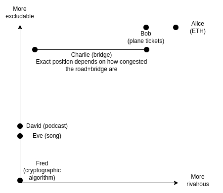

一 . 收入-罪恶曲线
文章的全名是，收入-罪恶曲线：分析公共物品投资选择的特殊方法。在本文中，Vitalik分别分析了对于排他性和竞争性不同的各类公共物品，以商业化方式获得一单位的经济支持，所必要的作恶的大小。
上面这句话有点复杂，必须在如下两个前提下加以理解：
一、任何公共物品，商业化运营的实质都是以作恶换取经济支持
二、这里的作恶不带有道德判断的含义，事实上，公共物品提供者更可能是被迫作恶的
关于第二个前提，Vitalik做了进一步的解释，在他看来，以下五类都可以被视作"恶"：
1.由于产品定价过高导致的无谓损失
2.由于产品定价过低导致的拥堵
3.损害用户利益（比如在视频中植入广告）
4.Engaging in offensive actions through the legal system
这句我真的没懂他想说啥，但结合上下文看，他应该在谈维权的法律成本之类的内容，但我不太理解为什么这是公共物品提供者作的恶。
5.放弃部分原则（B站可能会变质，但永远不会倒闭。嗯。）
明确了上述前提，我们来看他基于排他性和竞争性水平划分的几类公共物品分别对应怎样的Revenue-Evil curve。
第一类：完全排他、完全竞争
第二类：完全排他、不一定具有竞争性
第三类：不一定排他、不一定竞争
第四、五类：难于构建排他性、非竞争
第六类：无法排他、非竞争
单纯从分类上看，Vitalik没有讨论那些竞争但非排他的部分，我不确定这是出于什么原因，也许是因为Vitalik认为此类公共物品通常没有明确、可被资助的提供者。（因为经济学上这类公共物品往往是鱼塘、森林、水源等）
完成上述分析后，Vitalik指出，使公共物品投资效率最高，意味着要投入那些Revenue-Evil curve最陡峭的项目当中。这意味着，假设没有获得外界的资助，该类项目自行商业化时，获取一单位收入所需要作恶的量最大。
在这个模型下，大概可以得出排序——
最应该优先的是完全无法被商业化的项目，比如开源的算法；然后是可以适度商业化的项目，通过资助使他们的作恶被控制在合理区间，比如播客和音乐等等；再次才是那些高度排他的，资助仅能帮助他们微弱地转向，对社会的正外部性溢出并不大。
这个逻辑是足够直观的，但问题在于，这个曲线完全没有办法量化，进而也就没有办法以此为依据评估资助顺序。更重要的是，Vitalik本人也已经意识到，即使只是尝试以此曲线作为评估依据，也会诱使公共物品提供者歪曲自己的曲线，故意作恶来骗取资助。
而且，事实上我们可以观察到，竞争性决定曲线端点，有竞争性时曲线右端点为零，非竞争性时右端点非零；排他性决定曲线斜率，排他性越高，曲线斜率越小，这两组映射关系是极其简单明确的。
因此，Vitalik在本文最后指出，Renvenue-Evil curve的实际意义根本不在于指导资助，否则只需要使用经济学上已有的竞争性-排他性框架进行分析即可。该曲线的本质是一个思想实验，最大的意义在于提供一种审视对公共物品补助的新视角——一美元的资助能减少多少的作恶。
二 . 一个实际案例 中国医疗体制改革
在大部分场合下，与其把"非排他性"理解成没有门槛，不如理解成利他，最直观的是开源软件，但还有一些不直观的情况，比如医疗。
在现在的一般视角下，医生这个职业与其他职业没有本质分别，医疗与其他产业也没有太大的不同。但医疗行业高度利他性的伦理要求（但愿世间人无病，何惜架上药生尘），与将其视作产业所带来的盈利要求是天然冲突的。
因此，当政府、社会不对其进行补助，而是让医疗以产业的形式自给自足的时侯，作恶曲线会呈现一个极端陡峭的斜率。
协和医科大学出版社原社长袁钟以前做过一个演讲，题目叫"中国医疗行业的信任资本到哪去了"，里面有一段内容，摘录如下——
市场经济两个目标：第一客户最大化，第二利润最大化。
什么叫客户最大化？如果我是个北京医院的院长，我恨不得所有北京人民成为我的病人，客户最大化。
什么叫利润最大化？所有小病变成大病，莆田系有12字方针——你有病，病很重，我有药，药很贵。12字方针，我们这个行业的信任资本就这么摧毁了。
说到百度，不要怪老百姓，不好意思老百姓看病只能上百度，但是一上百度，谁给钱多就放在最前面，所以查的全是莆田系医院。
天上地上，天上百度，地上莆田，天罗地网。
按Vitalik的分析，就是袁钟最后讲的那个意思，完全利他的行业搞不了市场经济，这是政府和社会该负责的地方。